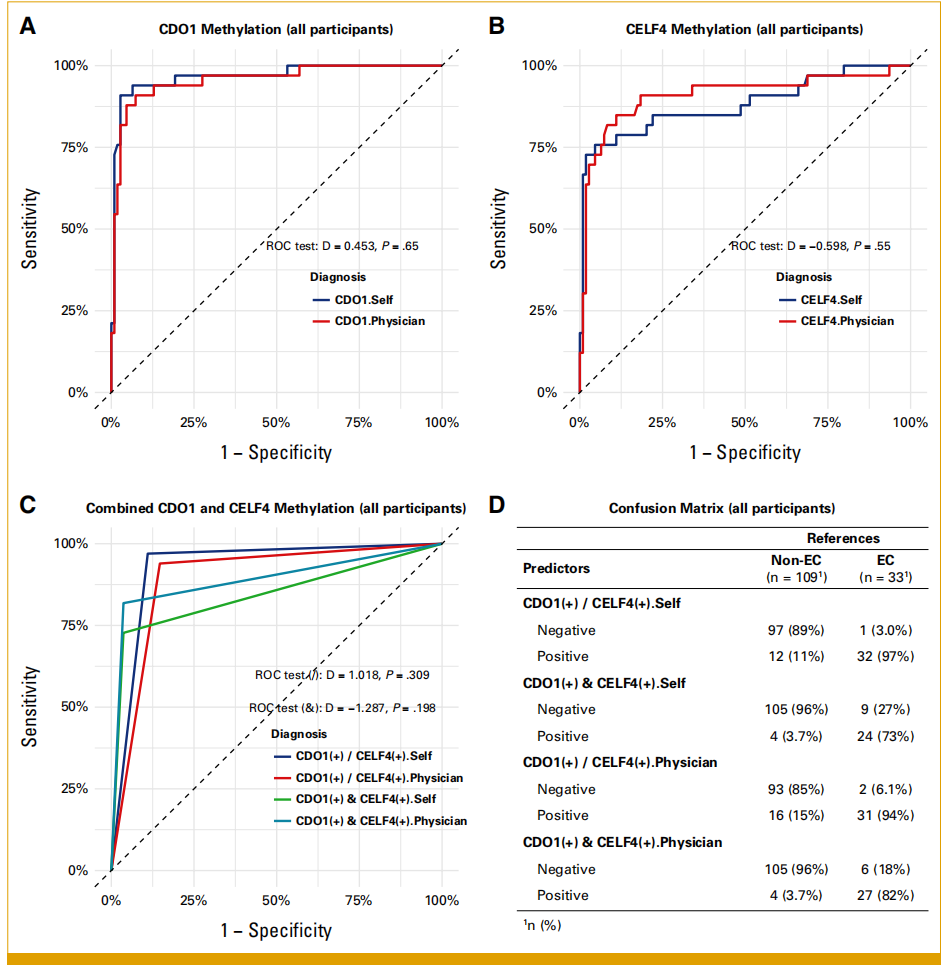

1Background & Objective
- Gap: self-sampling proven for cervical cancer; EC self-sampling methylation lacks robust evidence.
- Objective: compare self- vs physician-collected CDO1/CELF4 methylation for EC detection.
2Study Design & Cohort
33
EC
109
non-EC
2024.3–25.2
enrollment
- Design: prospective cross-sectional; paired Evalyn Brush self + physician cervical samples.
- Assay: qPCR CDO1/CELF4 methylation (ΔCt); hysteroscopy histology = gold standard.
- Agreement: Spearman correlation + Bland-Altman plots.
- Exclusion: menstruation · pregnancy · hormonal therapy · IUD · recent procedures.
- Inclusion: adults scheduled for hysteroscopy (AUB / TVS abnormal / clinical concern).
Evalyn
self-sampling brush
qPCR
methylation assay
n=102 est.
sample size
0.930
AUC self
0.896
AUC physician
R 0.79/0.76
concordance
- Pathology spectrum: EC · EH · EAH · EP · EM — broad comparison.
- Home value: reduces specialist visits; patient-centred care.
- Sample size: estimated n=102 (AUC 0.85, α 0.05, half-width 0.05); 142 enrolled.
- Analysis: Wilcoxon · χ² · Spearman · Bland-Altman · ROC/AUC.
- Sensitivity: robust findings accounting for missing data.
- Limits: single-center; symptomatic/referred cohort — not population screening.
STROBE-compliant; robust to missing-data sensitivity analysis; pre/postmenopausal subgroups stable; self AUC even slightly higher.
3ROC — Diagnostic Accuracy

Fig. ROC — self-sampling AUC 0.930 vs physician 0.896 (equivalent accuracy).
0.930
AUC · self
0.896
AUC · physician
4Concordance & Key Metrics
R 0.79
CDO1 agreement
R 0.76
CELF4 agreement
minimal bias
Bland-Altman
P<0.001
EC vs non-EC ΔCt
- No systematic bias between sampling methods — home collection is reliable.
- Stable subgroups: high discrimination pre- & postmenopausal.
5Clinical Value
33
EC cases
109
non-EC
7
pathology groups
- Patient-centric: at-home self-collection expands access to EC triage.
- Workflow fit: triage before hysteroscopy — fewer invasive procedures.
- Broad spectrum: EC · EH · EAH · EP · EM all compared.
- Next step: multicenter validation in larger populations.
pre / post
menopause subgroups
high AUC
both groups
0.930
self AUC
- Compliance: self-collection acceptable & convenient for women.
- Cost: reduces clinic visits & invasive procedure burden.
- Telehealth: pairs with remote counselling & referral triage.
Equivalent diagnostic accuracy (self 0.930 vs physician 0.896) supports a home-based EC triage pathway; reduces specialist visits & improves patient experience.